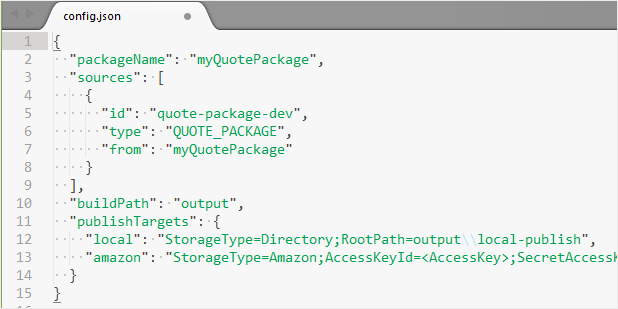

VT projects
A VT project is a workspace where you prepare the contents of a VT package.
Creating a VT project
To create a VT project, start by making a directory that will host the project, and navigate to it. For example:
$ mkdir myVTProject
$ cd myProject
Next, run the following vtc command, replacing <myQuotePackage> with the path to your source Quote package:
$ vtc package create --from <myQuotePackage>
This generates an initial set VT project files, including config.json, where you can specify:
- The location of the source Quote package.
- The build path. When you build the VT project, the resulting VT package gets placed here.
- Targets (such as the cloud) for where to publish the VT package.

Customizing VT project contents
In a VT project, you can define:
- Lookup tables, read-only data tables accessible at runtime by the Configurator API services.
- Arguments, values used by the services when solving configurations or calculating prices.
- Solve functions for defining custom configuration behavior accessible by your SAP models.
- Price functions for defining custom pricing behavior.
Building a VT package
To build the project into a VT package, run:
$ vtc package build
This VT package is deployed to the ./output folder in your project's root directory.
When you build, data from the source Quote package is converted into a format compatible with the VT SDK API. The resulting VT package is stand-alone; it doesn't have dependencies on other data sources.
Publishing a VT package
You can publish a VT package to a target specified in config.json. For example, the following publishes to the amazon target:
$ vtc package publish amazon
For more information on vtc and package management, see VTC command line tool.